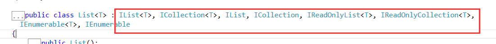

原文连接:https://www.cnblogs.com/taotaozhuanyong/p/11563342.html
参考地址：https://blog.csdn.net/qiaoquan3/article/details/51380992
1、集合set：纯粹的数据集合
2、线性结构：一对一的，数组
3、树形结构：一对多的，菜单/文件夹/类别/属性控件/表达式目录树
4、图形/网状结构：多对多，地图应用比较多，网站的应用比较少
线性结构：
Array/ArrayList/List/LinkedList/Queue/Stack/HastSet/SortedSet/Hashtable/SortedList/Dictionary/SortedDictionary
IEnumerable、ICollection、IList、IQueryable
接口是标机功能的，不同的接口岔开，就是为了接口隔离；虽然我们接口内容也可以复用。
IEnumerable任何数据集合，都实现了的，为不同的数据结构，提供了统一数据访问方式，这个就是迭代器模式。
1、内存连续存储，节约空间，可以索引访问，读取速度快，增删慢
Array：在内存上连续分配的，而且元素类型是一样的。
int[] intArray = new int[3];
intArray[0] = 123;
string[] stringArray = new string[] { "123", "234" };//ArrayArrayList：不定长的，连续分配的；元素没有类型限制，任何元素都是当成object处理，如果是值类型，会有装箱操作；读取快，增删慢。
ArrayList arrayList = new ArrayList();
arrayList.Add("Bingle1");
arrayList.Add("Bingle2");
arrayList.Add(32);//add增加长度
//arrayList[4] = 26;//索引复制，不会增加长度
//删除数据
//arrayList.RemoveAt(4);
var value = arrayList[2];
arrayList.RemoveAt(0);
arrayList.Remove("Bingle2");List<T>：也是Array，内存上都是连续拜访的；不定长；泛型，保证类型安全，避免装箱拆箱；读取快，增删慢。
List<int> intList = new List<int>() { 1, 2, 3, 4 };
intList.Add(123);
intList.Add(123);
//intList.Add("123");
//intList[0] = 123;
List<string> stringList = new List<string>();
//stringList[0] = "123";//异常的
foreach (var item in intList)
{
}2、非连续拜访的，存储数据+地址，找书的话就只能顺序查找，读取就比较慢，增删快
LinkedList<T>：泛型的特点；链表，元素不连续分配，每个元素都有记录前后节点；节点值可以重复。能不能下标访问？不能的，找元素就只能遍历，查找不方便，增删就比较方便。
LinkedList<int> linkedList = new LinkedList<int>();
//linkedList[3]
linkedList.AddFirst(123);
linkedList.AddLast(456);
bool isContain = linkedList.Contains(123);
LinkedListNode<int> node123 = linkedList.Find(123); //元素123的位置 从头查找
linkedList.AddBefore(node123, 123);
linkedList.AddBefore(node123, 123);
linkedList.AddAfter(node123, 9);
linkedList.Remove(456);
linkedList.Remove(node123);
linkedList.RemoveFirst();
linkedList.RemoveLast();
linkedList.Clear();Queue：就是链表，先进先出，放任务延迟执行，A不断写入日志任务，B不断获取任务去执行
Queue<string> numbers = new Queue<string>();
numbers.Enqueue("one");
numbers.Enqueue("two");
numbers.Enqueue("three");
numbers.Enqueue("four");
numbers.Enqueue("four");
numbers.Enqueue("five");
foreach (string number in numbers)
{
Console.WriteLine(number);
}
Console.WriteLine($"Dequeuing '{numbers.Dequeue()}'");
Console.WriteLine($"Peek at next item to dequeue: { numbers.Peek()}");
Console.WriteLine($"Dequeuing '{numbers.Dequeue()}'");
Queue<string> queueCopy = new Queue<string>(numbers.ToArray());
foreach (string number in queueCopy)
{
Console.WriteLine(number);
}
Console.WriteLine($"queueCopy.Contains(\"four\") = {queueCopy.Contains("four")}");
queueCopy.Clear();
Console.WriteLine($"queueCopy.Count = {queueCopy.Count}");Stack：就是链表，先进后出，解析表达式目录树的时候，先产生的数据后使用。操作记录为命令，撤销的时候是倒叙的。
Stack<string> numbers = new Stack<string>();
numbers.Push("one");
numbers.Push("two");
numbers.Push("three");
numbers.Push("four");
numbers.Push("five");//放进去
foreach (string number in numbers)
{
Console.WriteLine(number);
}
Console.WriteLine($"Pop '{numbers.Pop()}'");//获取并移除
Console.WriteLine($"Peek at next item to dequeue: { numbers.Peek()}");//获取不移除
Console.WriteLine($"Pop '{numbers.Pop()}'");
Stack<string> stackCopy = new Stack<string>(numbers.ToArray());
foreach (string number in stackCopy)
{
Console.WriteLine(number);
}
Console.WriteLine($"stackCopy.Contains(\"four\") = {stackCopy.Contains("four")}");
stackCopy.Clear();
Console.WriteLine($"stackCopy.Count = {stackCopy.Count}");队列是没有底的瓶子，栈是有底的瓶子
集合：纯粹的集合，容器，东西丢进去，唯一性，无序的。
HashSet：hash分布，元素间没有关系，动态增加容量，去重的。统计用户IP；IP投票；交叉并补；二次好友/间接关注/粉丝集合
HashSet<string> hashSet = new HashSet<string>();
hashSet.Add("123");
hashSet.Add("689");
hashSet.Add("456");
hashSet.Add("12435");
hashSet.Add("12435");
hashSet.Add("12435");
HashSet<string> hashSet1 = new HashSet<string>();
hashSet1.Add("123");
hashSet1.Add("689");
hashSet1.Add("789");
hashSet1.Add("12435");
hashSet1.Add("12435");
hashSet1.Add("12435");
hashSet1.SymmetricExceptWith(hashSet);//补
hashSet1.UnionWith(hashSet);//并
hashSet1.ExceptWith(hashSet);//差
hashSet1.IntersectWith(hashSet);//交
SortSet：排序的集合；去重而且排序；统计排名，每统计一个就丢进去集合
SortedSet<string> sortedSet = new SortedSet<string>();
//IComparer<T> comparer 自定义对象要排序，就用这个指定
sortedSet.Add("123");
sortedSet.Add("689");
sortedSet.Add("456");
sortedSet.Add("12435");
sortedSet.Add("12435");
sortedSet.Add("12435");
SortedSet<string> sortedSet1 = new SortedSet<string>();
sortedSet1.Add("123");
sortedSet1.Add("689");
sortedSet1.Add("456");
sortedSet1.Add("12435");
sortedSet1.Add("12435");
sortedSet1.Add("12435");
sortedSet1.SymmetricExceptWith(sortedSet);//补
sortedSet1.UnionWith(sortedSet);//并
sortedSet1.ExceptWith(sortedSet);//差
sortedSet1.IntersectWith(sortedSet);//交读取和增删都快的，有没有？有，hash散列，字典。是key-value，一段连续空间放value（开辟的空间比用到的多，hash使用空间换性能），基于key散列计算得到地址索引，这样读取快，但是没有数组快。增删也快，删除时也是计算位置，增加也不影响别人。代价就是，肯定会出现2个key（散列冲突），散列结果一致，可以让第二次的+1；可能会造成效率的降低，尤其是数据量大的情况下，以前测试Dictionary在3W条左右的时候，性能爱是下降的厉害。
Hashtable---key-value，体积可以动态增加，拿着key计算下一个地址，然后放入key-value；object-装箱茶香，如果不同的key得到相同的地址，第二个在前面地址上+1；查找的时候，如果地址对应数据的key不对，那就+1查找。。
浪费了空间，Hashtable是基于数组实现；查找个数据，一次定位；增删，一次定位；增删改查都很快，但是浪费空间，数据太多，重复定位定位，效率就下去了。
Hashtable table = new Hashtable();
table.Add("123", "456");
table[234] = 456;
table[234] = 567;
table[32] = 4562;
table[1] = 456;
table["eleven"] = 456;
foreach (DictionaryEntry objDE in table)
{
Console.WriteLine(objDE.Key.ToString());
Console.WriteLine(objDE.Value.ToString());
}
//线程安全
Hashtable.Synchronized(table);//只有一个线程写 多个线程读字典：泛型；key - value，增删查改 都很快；有序的。但是字段不是线程安全的，ConcurrentDictionary
Dictionary<int, string> dic = new Dictionary<int, string>();
dic.Add(1, "HaHa");
dic.Add(5, "HoHo");
dic.Add(3, "HeHe");
dic.Add(2, "HiHi");
dic.Add(4, "HuHu1");
dic[4] = "HuHu";
dic.Add(4, "HuHu");
foreach (var item in dic)
{
Console.WriteLine($"Key:{item.Key}, Value:{item.Value}");
}我们来看一下List，如下图

List集合为什么会继承这么多接口呢？
1、ICollection：
Count、IsReadOnly、Add、Clear、Contains、CopyTo、Clear
2、IList：
T this[int index] （索引）、IndexoOf、.....
3、IEnumerable：
遍历才会去查询比较，迭代器 yield
GetEnumerator：Current、MoveNext、Reset
任何数据集合，都实现了IEnumerable，为不同的数据结构提供了统一的数据访问方式，这个就是迭代器模式。
4、IQueryable：
表达式目录树的解析，延迟到遍历的时候才去执行，EF的延迟查询
IQueryProvider Provider{get;}
yield是语法糖，编译时由编译器生成Iterrator的代码，包括movenext current reset
含有yield的函数说明它是一个生成器，而不是普通的函数。当程序运行到yield这一行时，该函数会返回值，并保存当前域的所有变量状态；等到该函数下一次被调用时，会从上一次中断的地方开始执行，一直遇到下一个yield, 程序返回值, 并在此保存当前状态; 如此反复，直到函数正常执行完成。
迭代器模式是设计模式中行为模式(behavioral pattern)的一个例子，他是一种简化对象间通讯的模式，也是一种非常容易理解和使用的模式。简单来说，迭代器模式使得你能够获取到序列中的所有元素 而不用关心是其类型是array，list，linked list或者是其他什么序列结构。这一点使得能够非常高效的构建数据处理通道(data pipeline)。
--即数据能够进入处理通道，进行一系列的变换，或者过滤，然后得到结果。事实上，这正是LINQ的核心模式。
在.NET中，迭代器模式被IEnumerator和IEnumerable及其对应的泛型接口所封装。如果一个类实现了IEnumerable接 口，那么就能够被迭代；调用GetEnumerator方法将返回IEnumerator接口的实现，它就是迭代器本身。迭代器类似数据库中的游标，他是 数据序列中的一个位置记录。迭代器只能向前移动，同一数据序列中可以有多个迭代器同时对数据进行操作。
下面是一个yield的一个简单Demo：


public class YieldShow
{
public IEnumerable<int> CreateEnumerable()
{
try
{
Console.WriteLine("{0} CreateEnumerable()方法开始", DateTime.Now);
for (int i = 0; i < 5; i++)
{
Console.WriteLine("{0}开始 yield {1}", DateTime.Now, i);
yield return i;
Console.WriteLine("{0}yield 结束", DateTime.Now);
if (i == 4)
{
yield break;//直接终结迭代 4会出现的，，
}
}
Console.WriteLine("{0} Yielding最后一个值", DateTime.Now);
yield return -1;
Console.WriteLine("{0} CreateEnumerable()方法结束", DateTime.Now);
}
finally
{
Console.WriteLine("停止迭代！");
}
}
IEnumerable<int> iterable = this.CreateEnumerable();//1 不会直接执行
//IEnumerator iterator = iterable.GetEnumerator();
IEnumerator<int> iterator = iterable.GetEnumerator();
Console.WriteLine("开始迭代");
while (true)
{
Console.WriteLine("调用MoveNext方法……");
Boolean result = iterator.MoveNext();//2 正式开启CreateEnumerable
Console.WriteLine("MoveNext方法返回的{0}", result);
if (!result)
{
break;
}
Console.WriteLine("获取当前值……");
Console.WriteLine("获取到的当前值为{0}", iterator.Current);
}
public class YieldDemo
{
public IEnumerable<int> Power()
{
for (int i = 0; i < 10; i++)
{
yield return this.Get(i);
//Console.WriteLine("这里再来一次");
//yield return this.Get(i) + 1;
}
}
public IEnumerable<int> Common()
{
List<int> intList = new List<int>();
for (int i = 0; i < 10; i++)
{
intList.Add(this.Get(i));
}
return intList;
}
private int Get(int num)
{
Thread.Sleep(2000);
return num * DateTime.Now.Second;
}
}
YieldDemo yieldDemo = new YieldDemo();
foreach (var item in yieldDemo.Power())
{
Console.WriteLine(item);//按需获取，要一个拿一个
if (item > 100)
break;
}
Console.WriteLine("*******************************************");
foreach (var item in yieldDemo.Common())
{
Console.WriteLine(item);//先全部获取，然后一起返还
if (item > 100)
break;
}dynamic关键字：
.NET Framework4.0出现的，让程序有了弱类型的特点；
强类型特点：
编译时完成安全检查
弱类型：
运行时才检查类型
object A = new YieldDemo();
//A.Power();
Type type = A.GetType();
MethodInfo method = type.GetMethod("Power");
method.Invoke(A, null);
dynamic dA = A;
dA.Power();
//1 代替反射 2 数据绑定方便 3 跟C++交互方便
//性能比反射高
dynamic str = "abcd";//任何跟dynamic交互，都变成dynamic
Console.WriteLine(str.Length);
Console.WriteLine(str.Substring(1));